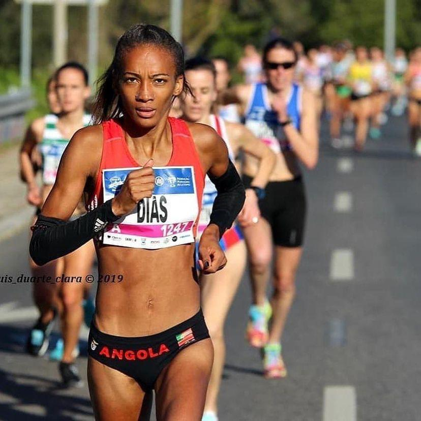
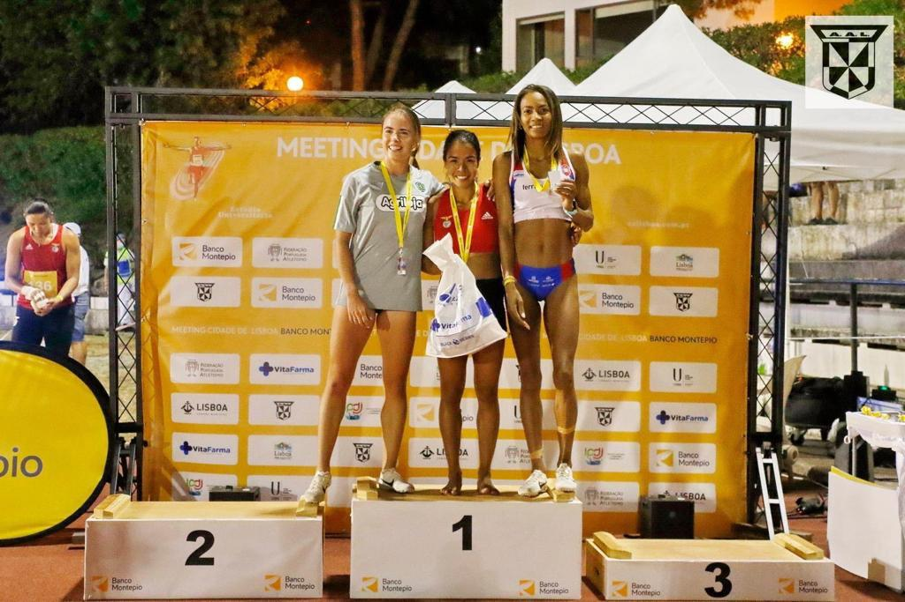
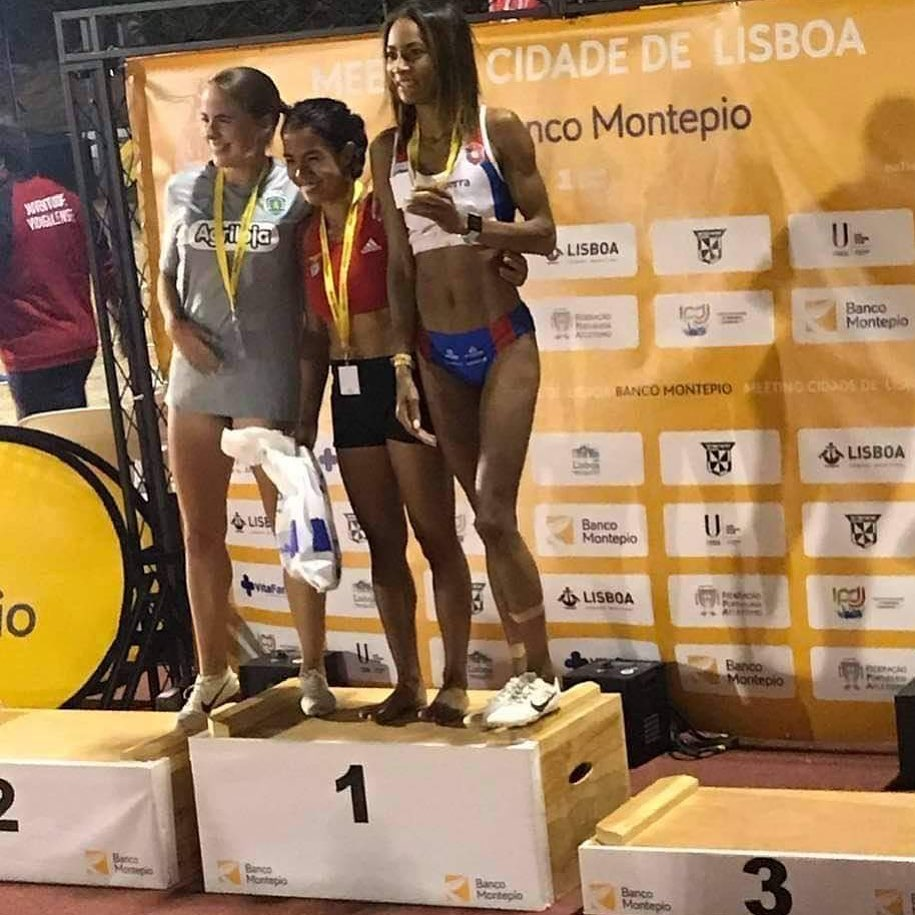

800 & 1500 m : pourquoi il faut entraîner plusieurs vitesses
Le demi-fond moderne exige une combinaison rare : puissance, économie de course, capacité aérobie et tolérance aux intensités très élevées.
Un magazine consacré à la performance, à la technique, au matériel et aux femmes et hommes qui font vivre l'athlétisme — du 800 m au cross, de la piste à la route.

Records nationaux, Doha 2019, cross et une carrière construite sur plusieurs disciplines.

Le demi-fond moderne exige une combinaison rare : puissance, économie de course, capacité aérobie et tolérance aux intensités très élevées.


Une séance d'endurance facile et une séance de 10 × 400 m ne demandent pas la même chose. La nutrition peut suivre la périodisation de l'entraînement.

La chaleur augmente le coût physiologique de la course. Le premier ajustement utile est souvent de revoir les attentes de rythme.
Les pointes changent la façon dont le pied et le mollet travaillent. Leur légèreté est séduisante, mais elles demandent une adaptation.

La rotation de chaussures peut être utile, mais elle doit répondre à un usage réel plutôt qu'à une collection de technologies.

La progression naît du stress d'entraînement suivi d'une adaptation. Sans récupération suffisante, augmenter les séances peut simplement augmenter la fatigue.
Les images de cette section ouvrent directement son Instagram. TrackFocus utilise son parcours comme fil rouge éditorial pour parler de demi-fond, de steeple, de cross et de compétition de haut niveau.
800 m · 1500 m · 3000 m steeple · cross-country · route
DÉCOUVRIR SON PORTRAITScannez ce code avec l'appareil photo de votre téléphone pour ouvrir cette démo, comme une vraie application.